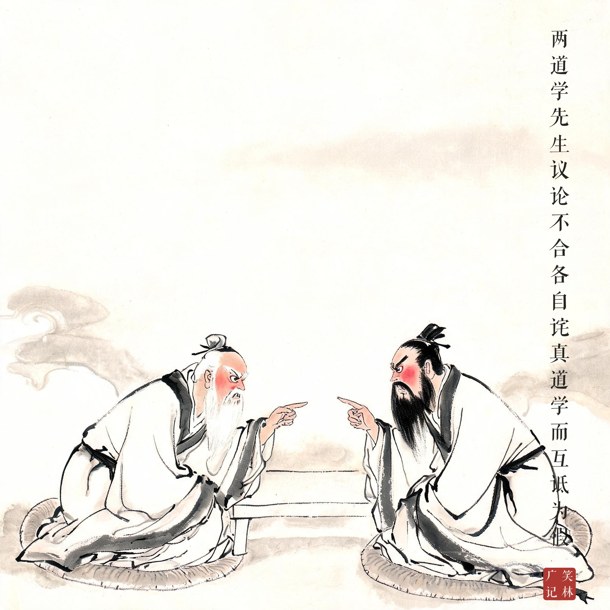
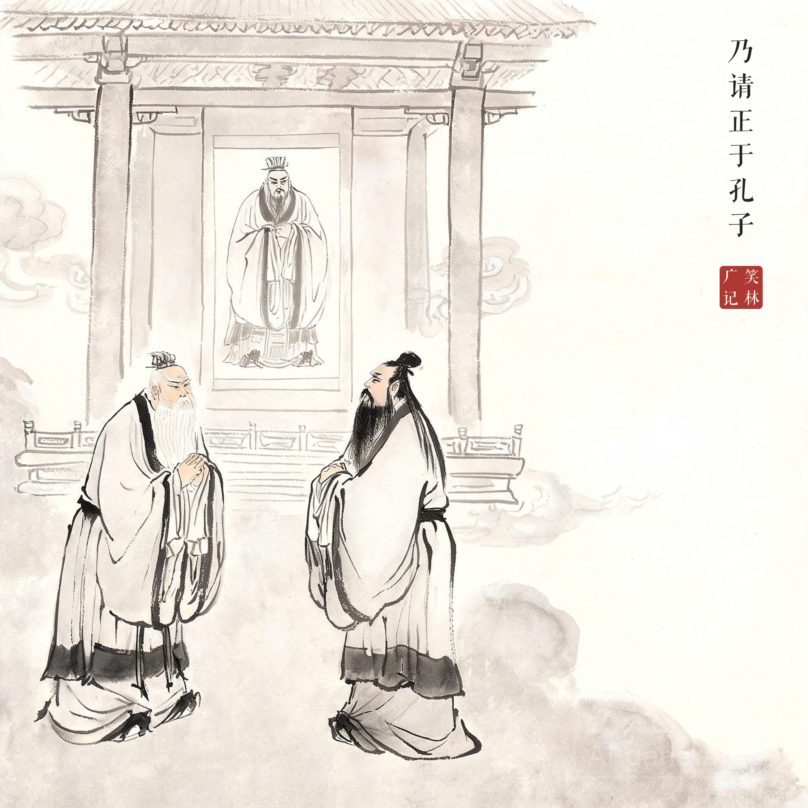
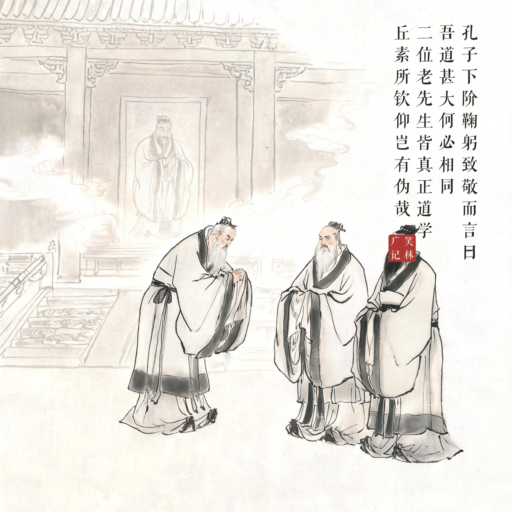

《笑林广记 · 腐流部》（[清]游戏主人纂集）
两道学先生议论不合，各自诧真道学而互诋为假，久之不决。乃请正于孔子，孔子下阶，鞠躬致敬而言曰："吾道甚大，何必相同。二位老先生皆真正道学，丘素所钦仰，岂有伪哉。"两人各大喜而退。弟子曰："夫子何谀之甚也！"孔子曰："此辈人哄得他动身就勾了，惹他怎么？"
两位道学先生议论不合，各自夸自己才是真道学，互相指摘对方是假道学，争了许久没有结果，于是到文庙请孔子裁决。孔子从画像上走下台阶，鞠躬致敬道："我的道很大，何必相同？二位老先生都是真正道学，我一向钦仰，哪里会有假的！"两人欢天喜地走了。弟子问："夫子怎么谄媚到这个地步？"孔子说："这种人物，哄得他们动身走掉就够了，招惹他们做什么？"
连圣人也怕缠人——画像里也得走下阶来陪笑。道学真伪之争，到了孔子这儿只换回一句话：哄走为上。这一页画的是"请正于孔子"，写下的却是千古吵架调解术。